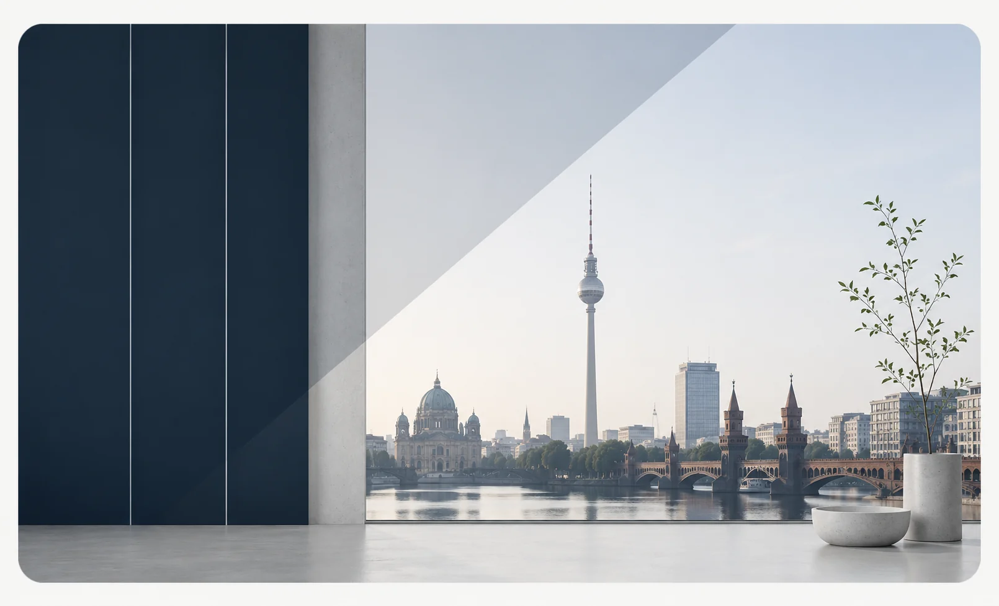

01
Vernetzen
Fachübergreifender Austausch zwischen Menschen und Institutionen der Wirbelsäulenmedizin in Berlin und Umgebung.
Wissenschaft/Fortbildung/Vernetzung
Die Berliner Wirbelsäulengesellschaft e.V. fördert Wissenschaft und Forschung, ärztliche Fort- und Weiterbildung sowie die regionale Vernetzung in Berlin und Umgebung.
01
Fachübergreifender Austausch zwischen Menschen und Institutionen der Wirbelsäulenmedizin in Berlin und Umgebung.
02
Interdisziplinäre Formate zu aktuellen klinischen und wissenschaftlichen Fragestellungen.
03
Kooperationen, Forschungsprojekte und gemeinsamer Wissenstransfer.
Nächste Veranstaltung
Sep2026
Lietzenseeufer 10 · 14057 Berlin
Die Gesellschaft
Die Berliner Wirbelsäulengesellschaft e.V. schafft eine regionale Plattform für fachlichen Austausch, Fortbildung und wissenschaftliche Zusammenarbeit rund um die Wirbelsäulenmedizin.
Sie versteht sich als Ergänzung zu bestehenden nationalen und internationalen Fachgesellschaften und verbindet Menschen und Institutionen über fachliche und organisatorische Grenzen hinweg.
Mehr über die Gesellschaft
Mitgliedschaft
Die Mitgliedschaft steht natürlichen Personen offen, die in Diagnostik, Therapie oder wissenschaftlicher Erforschung von Wirbelsäulenerkrankungen tätig sind.
Mehr zur Mitgliedschaft